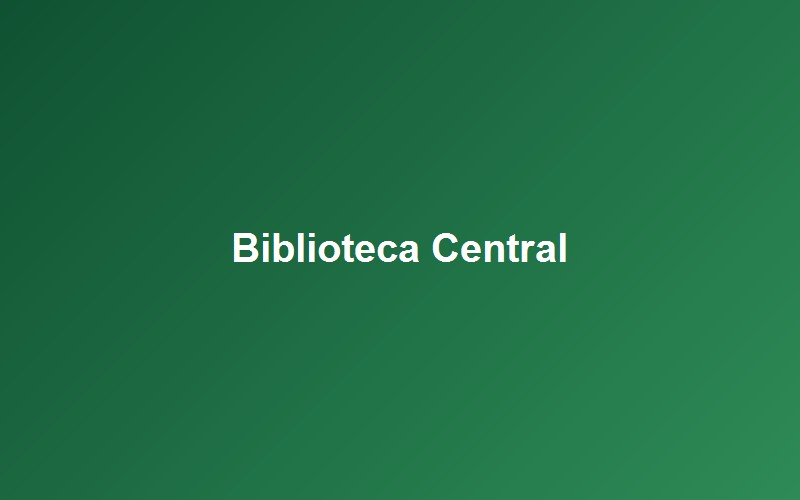

Biblioteca Central

A Biblioteca Central reúne o acervo da instituição e é o principal espaço de estudo do campus. O ambiente é dividido entre salas de leitura individual, mesas coletivas e uma área com computadores para pesquisa e trabalhos acadêmicos.
O local fica no Bloco A, no segundo andar, e atende das 8h às 22h em dias úteis.
Serviços oferecidos
- Empréstimo e devolução de livros;
- Salas de estudo individual e em grupo;
- Computadores com internet para pesquisa;
- Auxílio dos bibliotecários para localizar materiais.
Recursos de acessibilidade
- Rampa e porta automática na entrada;
- Elevador de acesso ao segundo andar;
- Mesas com altura regulável para cadeira de rodas;
- Balcão de atendimento em altura acessível.